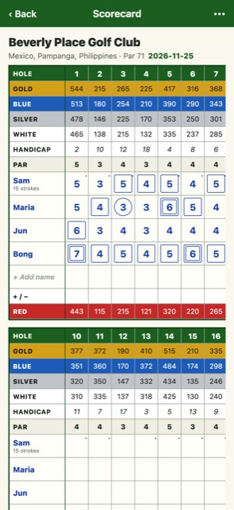
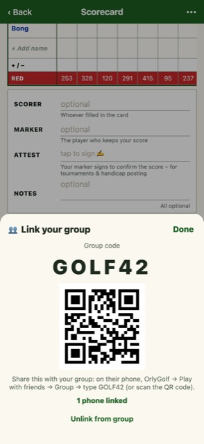
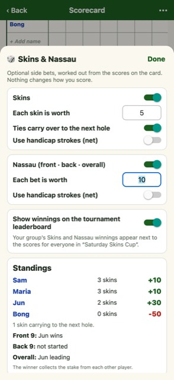

OrlyGolf
Scoring golf, made simple. A paper-style scorecard for your phone: find your course, score every hole, track your handicap and play with friends.




- Snap or keep your scorecard Photograph a paper card and we’ll help you fill it in, or start a fresh card and keep score as you play.
- Track your rounds Save your rounds, follow your handicap, and see your stats over time.
- Play with friends Start a group and share one card with up to 6 players. Join with a code or QR.
- Tournaments and leaderboards Run a tournament across groups with one live leaderboard.
- Skins and Nassau Side bets worked out from the scores, with winnings shown next to each player.
- Caddy O, your AI caddy Ask for a club thought, a tip, or a read on how the round is going.
OrlyGolf is built first for iPhone. Android is coming.